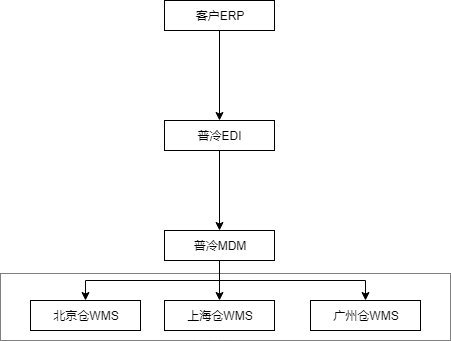

关于库存中心的思考
前言
普冷是一家仓储物流公司，现有仓库在全国有20多个，上线正式使用的系统有MDM、OMS、WMS和TMS。其中全国各仓统一使用一个WMS云平台进行作业，系统数据按照仓库级做数据隔离，每个仓库都有单独的货主、产品、订单和库存。
基于公司业务发展和管理层要求，现需要对全国主数据进行统一管理，并且此主数据能够承担整个普冷主数据中心的角色，因此引入了MDM（Master Data Management）的概念。
目前普冷的客户有些是全国仓性质的，比如A客户即在北京仓发货、又在上海仓发货，WMS按仓进行数据隔离，主数据资料存储了两份，一份在北京仓下，一份在上海仓下，而在MDM中只存储一份。
数据流程为：ERP推送数据到普冷EDI，EDI再将数据下发给MDM，MDM会按照配置规则将主数据分发到各仓的WMS系统。流程如下：

这样引入MDM后可以解决主数据统一管理的问题，但是对于数据层面来说毕竟是产生了新的数据，进入了新的表，产生了新的主键ID，这就是关键问题，下面说明这个问题造成的影响。
说明：WMS内部主数据不统一并不是系统设计问题，引入MDM是从公司管理角度出发
需求说明
现在普冷上线了OMS系统，但是只对订单层面做了功能实现，系统中并没有库存的概念。系统需要完善此项功能，基于两方面考虑：
- OMS需要具备库存管理功能，可以不需要像WMS一样细粒度管理，但是要有库存概念
- 部分业务场景进入OMS后，需要进行库存比对，以保证下游仓库库存量能够满足订单量
问题引入
现在的库存管理是在WMS系统内部的，虽然是微服务架构但是和WMS的耦合度还是很强的，我们打算将库存管理从WMS解耦出来，做成库存中心，为什么要叫它中心？是因为OMS的原因，虽然OMS可以不管到像WMS那样细粒度的库存，但是OMS还是要有库存的概念存在的。
那么问题来了：OMS中用到的主数据是MDM，WMS用到的主数据是自己内部的数据，而现在的库存管理存储的数据是按照WMS的主数据进行存储的，所以现在的库存管理如果直接做成库存中心，OMS是无法查询库存对照关系的，因为两边的主数据是不一致的
期望效果
将库存数据从WMS中解耦出来，抽象出一个库存中心，这样OMS和WMS就可以共用一份库存数据，两个系统也不需要考虑库存同步问题。
如果两边都有库存的话，存储结构就会如下：
这样OMS的库存和WMS就需要考虑库存同步问题：
- 入库
- 出库
- 库存修改
- 盘点
等等一系列引起库存变动的操作都需要考虑同步问题，基于与之前外部系统做库存同步的接口经验来看，一是工作量很大，场景很多，需要全盘考虑，不能漏掉任何一处的业务场景；二是做好之后两边库存对账仍会有很大差异，那么我们如果存储两份库存再进行同步可能要再慎重思考。当然还有一个原因是，普冷和外部客户系统是两个系统他们无法实现一个库存中心，而普冷是一个平台下的应用，库存中心的概念是合理的。
初步想法
既然要做库存中心，首先第一步要解决的就是把现在的库存管理从WMS系统中抽离出来，第二步要考虑上述提及的问题：主数据不统一，一份库存很难同时与两份主数据做对照关系。
第一步是纯技术问题这里不做过多阐述
第二步有三种解决方案（目前只想到了这三种方案）：
- 库存中同时增加MDM和WMS主数据两个关系
- 库存中保留原结构还与WMS主数据保持一致，通过程序代码实现MDM主数据与WMS主数据的的关系进而找到对应的库存
- 对库存中心进行分层，分两层：WMS库存、OMS库存；在原来的库存基础上再拆分一层库存出来，重新对库存进行建模，使其满足OMS库存模型的设计，毕竟两者对库存管理的维度不同。
方案一
第一种想法是在现在的库存表中增加MDM主数据相关的字段信息，这个开发工程量很大，WMS的业务逻辑恐怕都需要进行调整，并且这样两边的耦合度太高，为了做一个库存中心而增大整个平台的耦合性不值得，所以这个方案也被排除在外，不考虑。
方案二
对于方案二就是底层仍然使用一套表结构，所有的逻辑都要通过代码层面去实现，当然开发的难度会增加。这里我们不光要考虑两边主数据不一致需要映射的问题，还需要通过代码去处理OMS库存的模型问题，上面也一直提到，OMS的库存会和WMS库存的维度不同，而这一层关系如果使用代码来实现的话，恐怕需要一个很复杂的算法来支撑。
当然这个还是要看企业内部对OMS库存的管理维度，是否需要做到精细化管理，还是只是做一个简单的进销存。
这种处理方式其实有点像，目前我们和外部客户对接库存同步时的场景。内部和外部在进行库存接口同步时，我们不可能将WMS内的库存不经过任何处理，全部都传给客户，当然客户使用的各大ERP系统相信也不会去接受WMS内部如此细致的库存详情，具体到库位、托盘各个批属性等等。所以我们换个角度来看，现在的OMS就是外部客户的ERP，现在要进行库存同步，当然也不绝对是，OMS的库存可能要比客户ERP的库存稍微简单一点，因为不涉及前端电商销售的库存情况。
方案三
其实对于第3种方式和我们上面说的两份库存的存储结构有点一样，可以说一样也可以说不一样，具体得看我们技术上的怎么去实现这个效果。
如果说，我们像和对接其他外部系统一样通过接口去同步两边的库存数据，那就一样。
如果说，我们使用其他的技术方法来保证两边的库存数据实时同步，而不考虑具体的业务操作场景，只是单纯的同步两边的数据，那就是不一样的。虽然是两份库存，但是这两份库存是纯技术方式进行数据同步的，是从最底层的表数据同步，而这时候就和业务场景没有关系了，我们也不需要开发大量的接口来做数据同步。
具体要怎么做的话也没想到很合适的方式，比如：通过构建试图？触发器？还是说我们引入一些数据同步的中间件来保证两边的数据实时同步，这样的好处是进行了解耦，并且同步逻辑可控，按照实际需求进行处理即可。
最后
本次只是一些想法，如果要做的话，这个库存中心将会是一个怎样的方法。这里唯一一点的好处就是WMS部分的仓储库位也是由自己开发的，无论是再此基础上面进行改造升级还是重新构建OMS库存，两者共同组成库存中心，都是可取的。